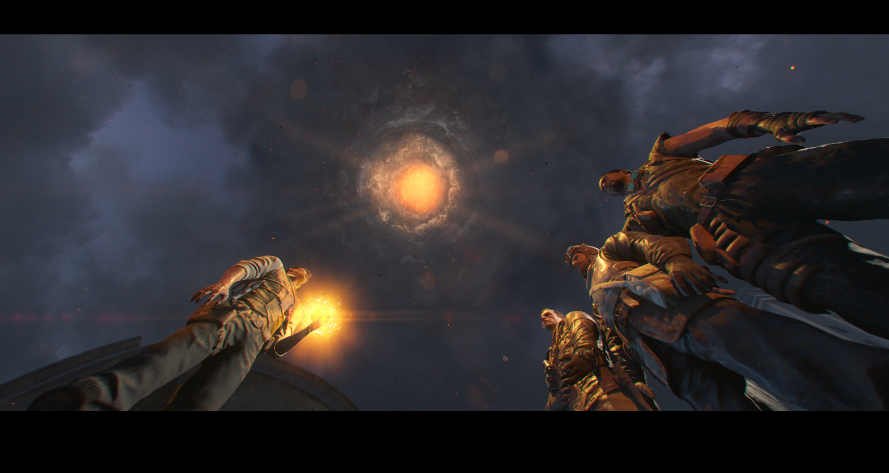

Canción Secreta 1 (Gorod Krovi)

Reproducir canción
Necesitaremos interactuar con 3 botellas.
Botella 1:
Primera sala que encontramos en el spawn, encima de un sofá.

Botella 2:
En el paso desde el Jugger-Nog hasta el búnker.
Botella 3:
En Supply Depot al entrar, justo dentro de un estante, de pie al lado de una caja.
Botella 1:
Primera sala que encontramos en el spawn, encima de un sofá.
Botella 2:
En el paso desde el Jugger-Nog hasta el búnker.
Botella 3:
En Supply Depot al entrar, justo dentro de un estante, de pie al lado de una caja.